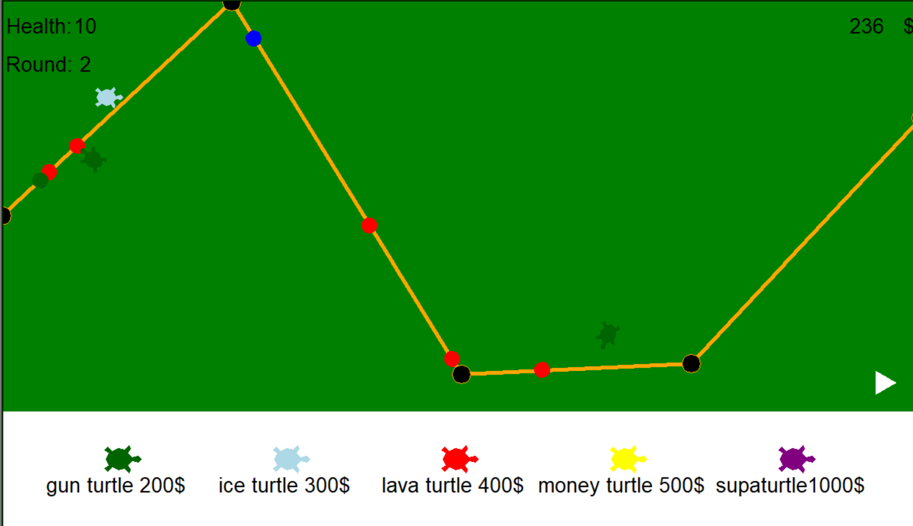
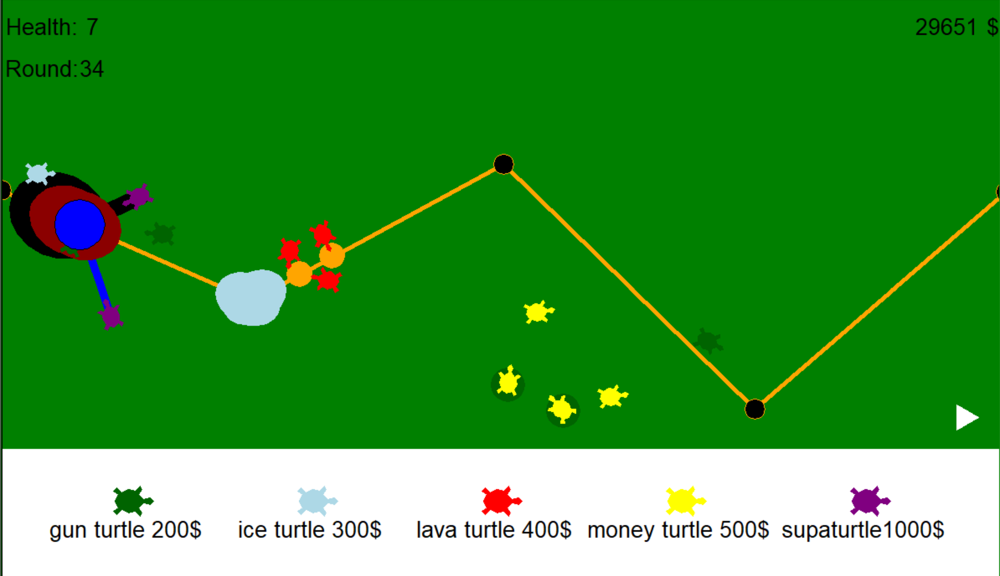

World's Greatest Programmer
During my highschool computer programming class I created a tower defense game called Turtle Tower Tefense Twenty Twenty Two (TTTTTT). It was coded it python and I used the turtle graphics library which is why the game uses turtles, I used the built in shapes since I didn't know how relative filepaths worked and I wanted it to work on any computer.
If you are familiar with tower defense games this might look similar to another game known as Bloons TD 6 (BTD6), which would make sense since that is what I based my game off of. This game is mostly a showcase of my understanding of python than it is an original game since this was my final project for a highschool programming class. That being said it's not like my game is a complete rip off of BTD6. My game contains 5 different turtles types:
Every turtle has 4 different upgrades that can increase their utility in defending against the enemies, it can get quite chaotic later on in the game when there is a lot going on and it doesn't help that turtle graphics is not the ideal game engine to use.

Even if recently I've been pretty occupied with school and work I used to make a lot of
songs/beats on FL Studio. I started producing in the summer of 2020 (I was 15) and I
continued to produce throughout highschool. After highschool I a sort of "producer's block"
and I haven't made much music since then. Here's a dubstep song I made:
This is my most recent music project and if you are familiar with music production you'd probably say that was pretty simple and I would have to agree, I don't have a lot of patience when it comes to making music and I'd much rather finish a project quickly and move onto something else then spend a lot of time on one big project, it might be to my own detrement but I just like to experiment and make a lot of different things.
One song I made was for a YouTube video which was a satirical take on the online trend to compare the abilities of two different characters (usually fictional) by awarding points for different stats to determine which character is more powerful. This is usually accompanied by an over the top Phonk song. The video itself is a comparison of my friends and we rigged the stats to make our friend (who would usually be considered weaker) win. The video isn't that funny if you don't know the people in it or the online trend that it is a satire of. I made a phonk song for this video, the vocal sample is a friend of mine rapping and the video itself was edited by another friend of mine, here it is: